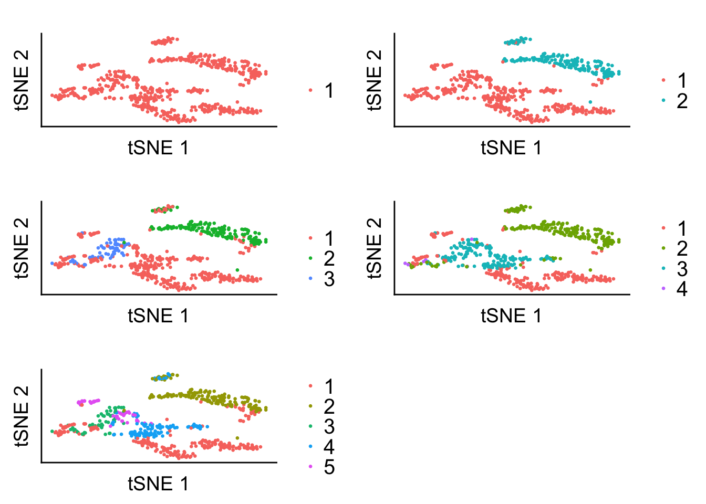
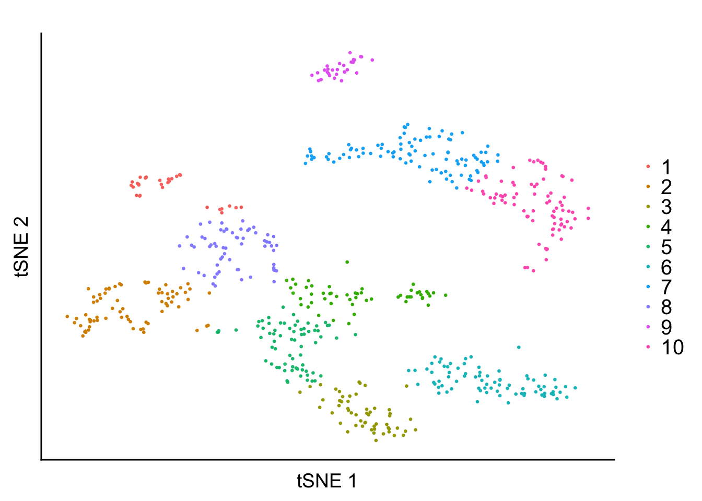
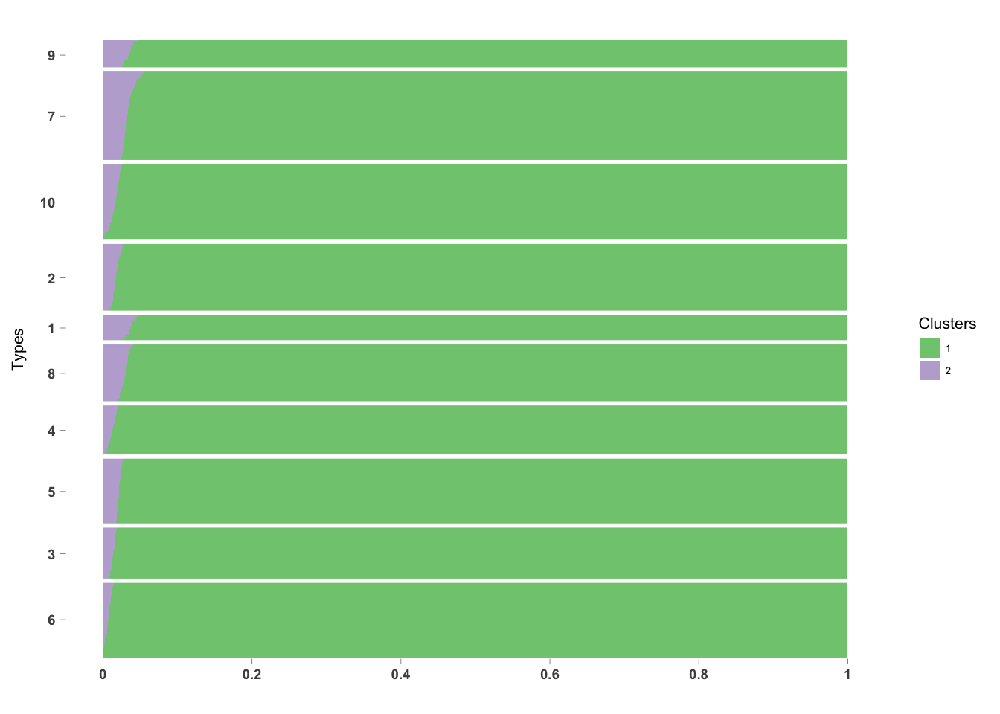
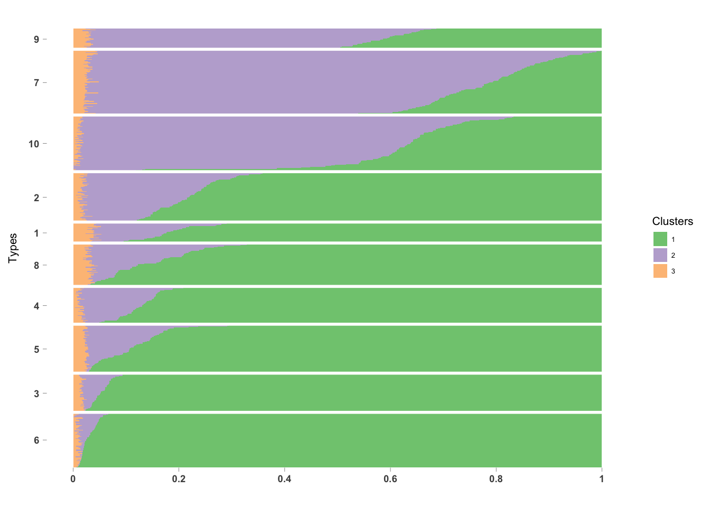
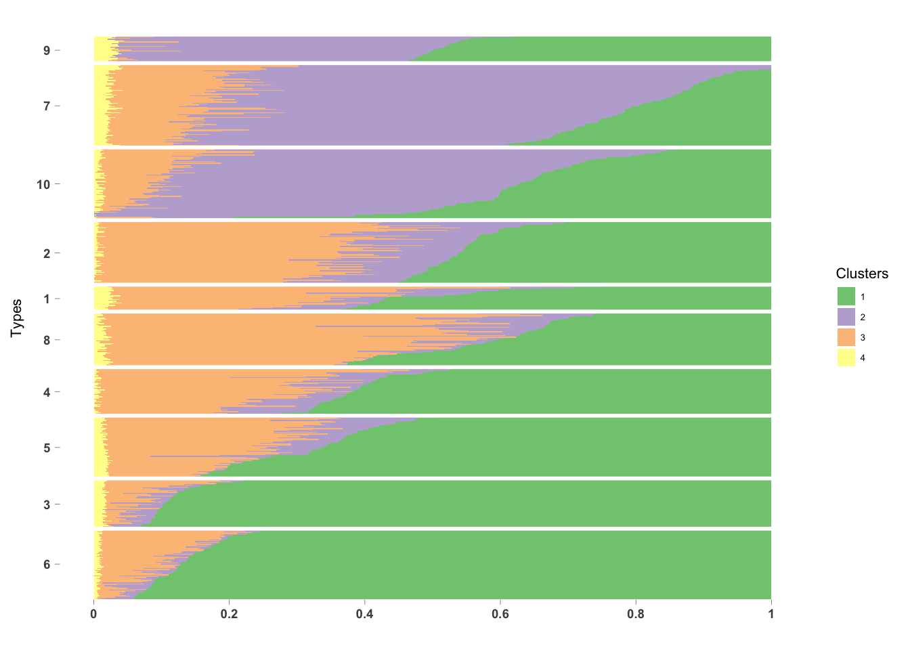
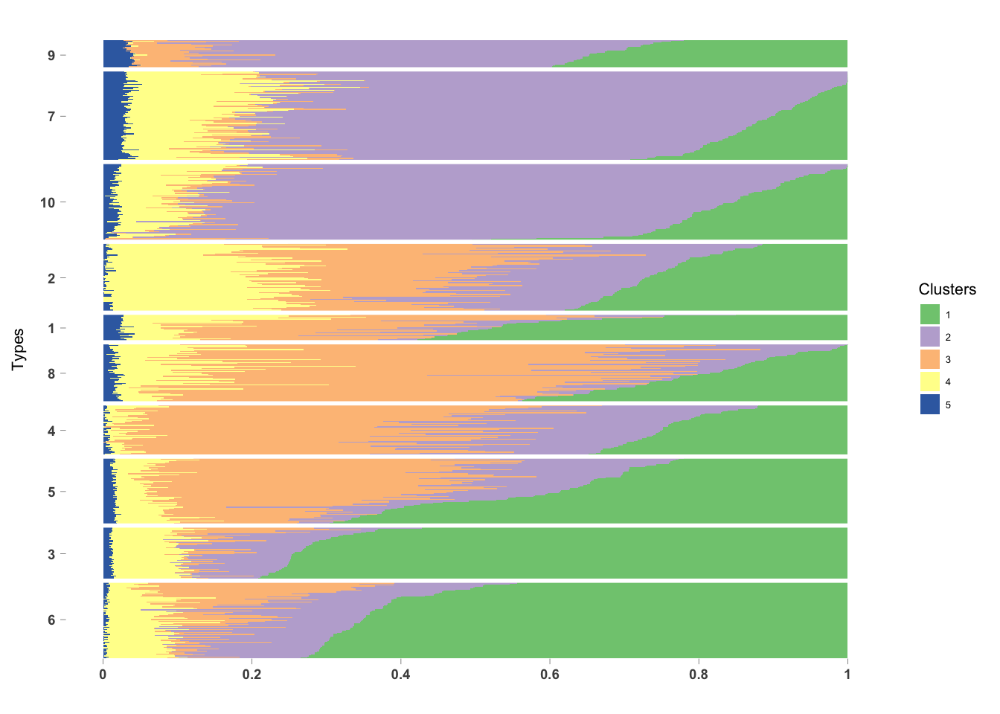
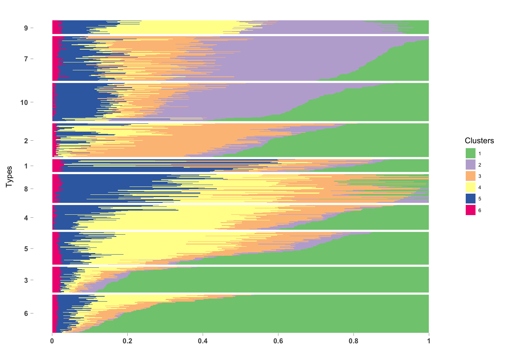
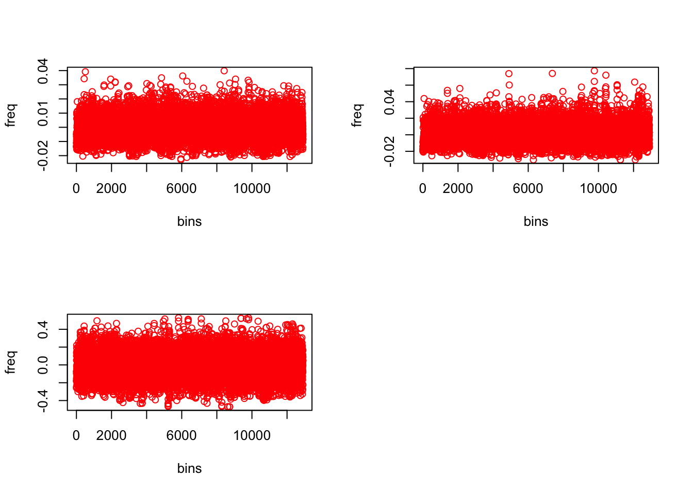

Load packages
library(methClust)
library(CountClust)## Loading required package: ggplot2library(ggplot2)
library(Seurat)## Loading required package: cowplot##
## Attaching package: 'cowplot'## The following object is masked from 'package:ggplot2':
##
## ggsave## Loading required package: Matrixlibrary(Rtsne)Load the methylation and non-methylation counts data
meth <- read.table("../data/meth.txt", header = TRUE)
unmeth <- read.table("../data/unmeth_w_zero.txt", header = TRUE)
rownames(meth) <- paste0("Bins_", 1:dim(meth)[1])
rownames(unmeth) <- paste0("Bins_", 1:dim(unmeth)[1])logit_vals <- t(log((meth+0.01)/(meth + unmeth + 0.02)))out <- Rtsne(logit_vals, dims = 2)
save(out, file = "../output/tsne_hch.rda")out <- get(load("../output/tsne_hch.rda"))
tsne_proj <- out$YLoad the list of methClust outputs from \(K=2\) to \(K=6\).
topic_clus <- list()
topic_clus[[1]] <- get(load("../output/methclust_hch_k_2.rda"))
topic_clus[[2]] <- get(load("../output/methclust_hch_k_3.rda"))
topic_clus[[3]] <- get(load("../output/methclust_hch_k_4.rda"))
topic_clus[[4]] <- get(load("../output/methclust_hch_k_5.rda"))
topic_clus[[5]] <- get(load("../output/methclust_hch_k_6.rda"))labels2 <- as.factor(apply(topic_clus[[1]]$omega, 1, function(x) return(which.max(x))))
labels3 <- as.factor(apply(topic_clus[[2]]$omega, 1, function(x) return(which.max(x))))
labels4 <- as.factor(apply(topic_clus[[3]]$omega, 1, function(x) return(which.max(x))))
labels5 <- as.factor(apply(topic_clus[[4]]$omega, 1, function(x) return(which.max(x))))
labels6 <- as.factor(apply(topic_clus[[5]]$omega, 1, function(x) return(which.max(x))))
data_ggplot <- data.frame(labels2 = labels2,
labels3 = labels3,
labels4 = labels4,
labels5 = labels5,
labels6 = labels6,
tSNE_1 = tsne_proj[, 1],
tSNE_2 = tsne_proj[, 2])
library(ggplot2)
plot1 <- ggplot(data_ggplot) + theme(panel.background = element_rect(colour = "black", size = 1),
panel.grid.major = element_blank(),
panel.grid.minor = element_blank(),
axis.text.y = element_blank(),
axis.text.x = element_blank(),
axis.ticks = element_blank(),
legend.text = element_text(size = 15)) + geom_point(aes(x = tSNE_1, y = tSNE_2, color = labels2), size = 0.5) + labs(x = 'tSNE 1', y = 'tSNE 2', title = '') + scale_color_discrete('')
plot2 <- ggplot(data_ggplot) + theme(panel.background = element_rect(colour = "black", size = 1),
panel.grid.major = element_blank(),
panel.grid.minor = element_blank(),
axis.text.y = element_blank(),
axis.text.x = element_blank(),
axis.ticks = element_blank(),
legend.text = element_text(size = 15)) + geom_point(aes(x = tSNE_1, y = tSNE_2, color = labels3), size = 0.5) + labs(x = 'tSNE 1', y = 'tSNE 2', title = '') + scale_color_discrete('')
plot3 <- ggplot(data_ggplot) + theme(panel.background = element_rect(colour = "black", size = 1),
panel.grid.major = element_blank(),
panel.grid.minor = element_blank(),
axis.text.y = element_blank(),
axis.text.x = element_blank(),
axis.ticks = element_blank(),
legend.text = element_text(size = 15)) + geom_point(aes(x = tSNE_1, y = tSNE_2, color = labels4), size = 0.5) + labs(x = 'tSNE 1', y = 'tSNE 2', title = '') + scale_color_discrete('')
plot4 <- ggplot(data_ggplot) + theme(panel.background = element_rect(colour = "black", size = 1),
panel.grid.major = element_blank(),
panel.grid.minor = element_blank(),
axis.text.y = element_blank(),
axis.text.x = element_blank(),
axis.ticks = element_blank(),
legend.text = element_text(size = 15)) + geom_point(aes(x = tSNE_1, y = tSNE_2, color = labels5), size = 0.5) + labs(x = 'tSNE 1', y = 'tSNE 2', title = '') + scale_color_discrete('')
plot5 <- ggplot(data_ggplot) + theme(panel.background = element_rect(colour = "black", size = 1),
panel.grid.major = element_blank(),
panel.grid.minor = element_blank(),
axis.text.y = element_blank(),
axis.text.x = element_blank(),
axis.ticks = element_blank(),
legend.text = element_text(size = 15)) + geom_point(aes(x = tSNE_1, y = tSNE_2, color = labels6), size = 0.5) + labs(x = 'tSNE 1', y = 'tSNE 2', title = '') + scale_color_discrete('')
plot_grid(plot1, plot2, plot3, plot4, plot5, ncol = 2, align = 'v')
set.seed (100)
out <- kmeans(tsne_proj, centers = 10)labels <- as.factor(out$cluster)
data_ggplot <- data.frame(labels = labels,
tSNE_1 = tsne_proj[, 1],
tSNE_2 = tsne_proj[, 2])
library(ggplot2)
plot1 <- ggplot(data_ggplot) + theme(panel.background = element_rect(colour = "black", size = 1),
panel.grid.major = element_blank(),
panel.grid.minor = element_blank(),
axis.text.y = element_blank(),
axis.text.x = element_blank(),
axis.ticks = element_blank(),
legend.text = element_text(size = 15)) + geom_point(aes(x = tSNE_1, y = tSNE_2, color = labels), size = 0.5) + labs(x = 'tSNE 1', y = 'tSNE 2', title = '') + scale_color_discrete('')
plot1
PlotmethClust <- function(topic_clus, fac){
omega <- topic_clus$omega
annotation <- data.frame(
sample_id = paste0("X", 1:length(fac)),
tissue_label = fac );
rownames(omega) <- annotation$sample_id;
StructureGGplot(omega = omega,
annotation = annotation,
palette = RColorBrewer::brewer.pal(8, "Accent"),
yaxis_label = "Types",
order_sample = TRUE,
axis_tick = list(axis_ticks_length = .1,
axis_ticks_lwd_y = .1,
axis_ticks_lwd_x = .1,
axis_label_size = 7,
axis_label_face = "bold"))
}PlotmethClust(topic_clus[[1]], factor(labels, c(6, 3, 5, 4, 8, 1, 2, 10, 7, 9)))
PlotmethClust(topic_clus[[2]], factor(labels, c(6, 3, 5, 4, 8, 1, 2, 10, 7, 9)))
PlotmethClust(topic_clus[[3]], factor(labels, c(6, 3, 5, 4, 8, 1, 2, 10, 7, 9)))
PlotmethClust(topic_clus[[4]], factor(labels, c(6, 3, 5, 4, 8, 1, 2, 10, 7, 9)))
PlotmethClust(topic_clus[[5]], factor(labels, c(6, 3, 5, 4, 8, 1, 2, 10, 7, 9)))
dim(topic_clus[[2]]$freq)## [1] 12905 3freq <- topic_clus[[2]]$freq
par(mfrow=c(2,2))
plot(freq[,1] - median(freq[,1]), col= "red", ylab = "freq", xlab = "bins")
plot(freq[,2] - median(freq[,2]), col= "red", ylab = "freq", xlab = "bins")
plot(freq[,3] - median(freq[,2]), col= "red", ylab = "freq", xlab = "bins")
This R Markdown site was created with workflowr